helen's takes on continual learning.
1. systems question
i appreciate how far we've gotten with neural nets and inspirations from the human brain; but especially with continual learning, my intuition is that it's moreso bottlenecked by infra and architecture questions, and i think we don't need to that closely mirror human capabilities. do we really need models to sleep and dream? like of course i'm sure with enough distillation and synthetic training it'd work, but that is too brute force and i doubt if it is the best research solution. how can we get models to be more data efficient? is there a way to perfectly parallelize training and rollout collection? these are all systems questions.
2. bottleneck in serving
if there are a thousand customers, each with a model that changes a little every day, someone has to batch those adapters efficiently on shared hardware, swap them without a cold start, roll them back if needed, keep a versioned history so you can audit what the model knew on a given date, and switch between models in the middle of a session without repaying the prefill cost. vLLM has supported batching many adapters over one base model for a while but I wonder how it’d look for serving adapters that hardly ever stop changing, with recoverability and versioning.
3. long context models (TTT) vs. continual LoRA
I am curious whether long context models (TTT) win or continual LoRA approaches win -- they look a little similar at first glance because they both update a small chunk of the model but they are different in subtle ways, like how they treat architecture, the way context is used when training, and which layer the updated weights live in, as well as constraints on the drift.
i am also a little skeptical on inference time retrieval methods because of latency from a product standpoint.
4. continual learning has to be designed hardware-first
i realized very quickly that you cannot naively say "I will stream data into the weights and post-train continuously" - the adapter layout in memory, the cost of a weight transfer, and the serving latency budget all dictate what kind of learning is even possible. If you want a model that learns from you continuously and runs close to you, the current stack does not give you enough control over the primitives, so you must have the bandwidth constraints in mind.
5. Consumer AI vs B2B
i think of course right now b2b is the easier route and consumer was not ready for cutting edge research — some people are AI-native because of their work, and selling to them is easier.
but in the long run i think the future lies in personal ai.
6. the timing for a continual-learning company is early for me
I think the company I want to build is early, because the serving stacks do not yet expose adapter-level and cache-level control as ordinary primitives; you cannot, from most APIs, change batching behavior or sequence limits or swap adapters mid-flight without doing something the provider did not intend. Until that flexibility exists, a continual-learning serving layer is fighting the infrastructure beneath it.
I am waiting for when inference engines and hardware vendors start shipping those controls as documented features (I think inferact was hinting on this on x?)!
my ideal stack overview:

hard problems hey!